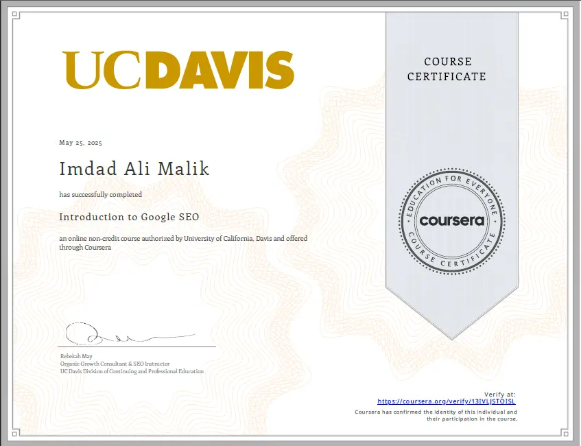
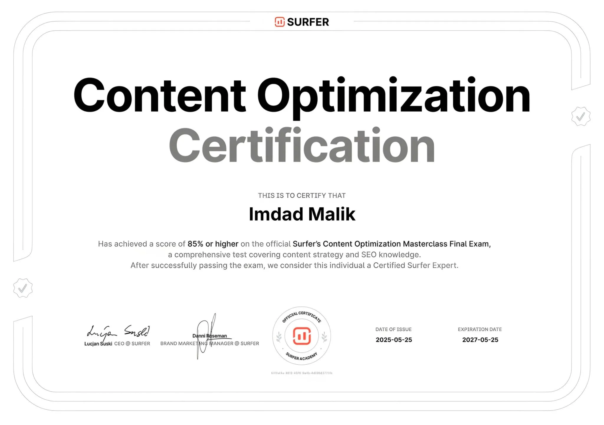

Imdad Malik
His published focus includes technical SEO, semantic SEO and optimization for AI search experiences. Publisher of this guide.
Explore SEO professionals and educators in Pakistan, compare their publicly described areas of work, and learn what to check before choosing an SEO consultant, freelancer or agency.
Quick answer: there is no single SEO expert who is the right choice for every business. The best fit depends on your goals, such as technical SEO, local search, eCommerce, content strategy, authority building or SEO education. Review relevant work, understand the proposed process and agree on measurable deliverables before hiring.
Publisher disclosure: Imdad Malik publishes this independent editorial guide and is included in the list. His profile is therefore not an independent endorsement. The names are presented for research and comparison, not as a verified ranking of performance. Some profiles have limited publicly verifiable information; readers should confirm current services and experience directly.The answer depends on the work you need. A technical SEO consultant, local SEO specialist, content strategist, educator and full-service agency may serve very different requirements. Use the profiles below as a starting point, then verify the provider's current work.
His published focus includes technical SEO, semantic SEO and optimization for AI search experiences. Publisher of this guide.
Associated with SEO, blogging and digital-skills training through iSkills.
Associated with iCreativez Technologies and agency-led digital marketing services.
Review the other entries for the areas they are described as focusing on, and verify their current services independently.
This table summarizes the professional category and focus described in this article. “Best fit” is an editorial description of the stated focus, not a rating, recommendation based on measured results or a guarantee of service availability.
| Professional | Professional type / fit | Described focus | Information status |
|---|---|---|---|
| Imdad Malik (publisher) | SEO specialist | Technical SEO, semantic SEO, AI search | Publisher profile; see credentials and portfolio below |
| Tanveer Nandla | Educator / trainer | SEO training, blogging and digital skills | Publicly described training activity; verify current courses |
| Mehboob Shar | Agency founder | Agency-led SEO and digital marketing | Company association described; verify current services |
| Rameez Ul Haq | Consulting / local search | Local SEO and SEO consulting | Limited detail verified for this guide |
| Hisham Sarwar | Freelancing educator | Freelancing and digital skills education | Public work is broader than SEO service delivery |
| Adeel Sami | Blogging / content | Blogging and content SEO | Limited detail verified for this guide |
| Faizan Ali | SEO strategy | Link building and authority building | Limited detail verified for this guide |
| Muneeb Iqbal | Technical / enterprise | Enterprise and technical SEO | Limited detail verified for this guide |
| Nashit Anwer | eCommerce | Online-store SEO | Limited detail verified for this guide |
| Sarah Khan | Content specialist | SEO copywriting and UX content | Limited detail verified for this guide |
The order is not a score or performance ranking. Confirm each person's identity, current role, availability, services and relevant case studies before making a hiring decision.
Readers should understand what this list does—and does not—claim.
This is an editorial research list of people associated in the available public information with SEO, digital marketing, freelancing, blogging or digital-skills education in Pakistan. It is not based on a controlled test of rankings, client outcomes, revenue growth or customer satisfaction.
The profiles distinguish between service providers and educators where that distinction is apparent. Where detailed, independently verifiable information was not available for this guide, the description is intentionally brief. A specialty label should not be treated as proof of a person's current service offering.
Imdad Malik is the publisher and is also included. This relationship is disclosed so readers can assess the potential conflict of interest. His inclusion and position do not establish that he is objectively the best SEO expert in Pakistan.
This page should be reviewed when reliable new information becomes available. If you identify an error or have a correction supported by a public source, please use the contact page.
The following profiles summarize the focus currently described in this guide. They are not endorsements. Check official websites, recent work, references and service details before contacting or hiring anyone.

Imdad Malik is a Pakistan-based SEO specialist whose published professional focus includes technical SEO, search intent, semantic and entity SEO, content strategy and optimization for AI search experiences. His profile describes work with clients in Pakistan, the UK, UAE and USA. Experience and client-market claims should be supported by the portfolio and project evidence available through his professional channels.
He also leads iCreatixPRO, which provides SEO and digital services.
Tanveer Nandla is associated with iSkills, a training platform in Multan. The platform is known for education related to SEO, blogging, digital marketing and freelancing. Check the provider's official channels for current courses, curriculum and availability.
Mehboob Shar is associated with iCreativez Technologies, a Karachi-based digital agency. Businesses considering an agency should review its current service scope, team, relevant case studies, communication process and contract terms.
This guide associates Rameez Ul Haq with SEO consulting and local-search topics. Before engaging a consultant, ask for recent examples involving Google Business Profile, local landing pages, location relevance and local organic visibility.
Detailed public information was limited when this profile was prepared. Verify current services directly.
Hisham Sarwar is publicly associated with freelancing and digital-skills education. His broader educational work may be useful to people learning online work and web-related skills; it should not automatically be interpreted as an offer of professional SEO services.
Adeel Sami is included in the content and blogging category for readers researching professionals associated with those topics. Evaluate any proposed content service through writing samples, editorial process, topical research and demonstrated organic outcomes.
Detailed public information was limited when this profile was prepared. Verify current services directly.
This guide associates Faizan Ali with SEO strategy and link-building topics. When assessing a link-building provider, ask how prospects are selected, whether links are editorially relevant, how quality is assessed and whether the approach follows search-engine guidelines.
Detailed public information was limited when this profile was prepared. Verify current services directly.
This guide associates Muneeb Iqbal with enterprise and technical SEO topics. For large websites, ask for evidence of experience with crawling, indexation, site architecture, international targeting and large-scale content management.
Detailed public information was limited when this profile was prepared. Verify current services directly.
This guide associates Nashit Anwer with eCommerce SEO. Store owners evaluating an eCommerce specialist should ask about category architecture, product-page optimization, faceted navigation, structured data, internal linking and commercial search intent.
Detailed public information was limited when this profile was prepared. Verify current services directly.
This guide associates Sarah Khan with SEO copywriting and user-experience content. When reviewing a writer's work, assess clarity, subject knowledge, originality, search-intent alignment and whether the content genuinely helps its intended audience.
Detailed public information was limited when this profile was prepared. Verify current services directly.
“SEO expert” is a broad label. Define the work your website needs before comparing providers. Not every professional offers every service listed here.
Includes crawlability, indexation, site architecture, redirects, canonicalization, structured data and technical diagnostics.
Focuses on local search presence, location pages, business information consistency, reviews and Google Business Profile where applicable.
Improves category and product discovery, internal linking, product information, indexation and commercial search journeys.
Aligns pages with search intent through research, useful information, clear structure, originality and content maintenance.
Addresses country and language targeting, international site structure, localized content and technical signals such as hreflang.
Emphasizes clear, reliable, well-structured information and strong underlying SEO. No provider can guarantee inclusion in AI-generated answers.
Because the publisher is also included in this article, this section separates the publisher's supporting materials from the comparison. Readers can inspect the documents and portfolio rather than relying only on a written biography.

SEO learning credential from the University of California, Davis program delivered through Coursera.

Training in practical search and content optimization.
Review the available project records and examples to assess the type of SEO work, approach and experience presented by the publisher.
View SEO project portfolioWhether you are hiring a freelancer, consultant or SEO agency in Pakistan, use a clear evaluation process instead of relying on a “number one” claim.
Identify whether you need more qualified leads, online sales, local visibility, technical improvements or a stronger content strategy.
Choose a provider whose recent work is relevant to your website type, industry, target audience and market.
Ask for case studies, sample audits or references. Understand the starting point, work completed, time period and measured outcome.
Ask what will be audited, prioritized, implemented and reported. Make sure responsibilities and deliverables are clear.
Discuss relevant metrics such as organic clicks, qualified leads, sales, conversions, indexation and completed technical fixes.
No SEO provider controls Google's results. Be cautious of guaranteed rankings, undisclosed link schemes and vague promises of instant traffic.
Practical answers to common questions people ask before choosing an SEO professional.
There is no single best SEO expert for every project. The right choice depends on your needs, such as technical SEO, local SEO, eCommerce, content strategy or training. Compare relevant experience, evidence, process and communication before deciding.
This page presents 10 SEO professionals and educators to research, including Imdad Malik, who publishes the guide. It is an editorial comparison resource, not a verified ranking of professional performance.
SEO pricing varies with project scope, website size, competition, deliverables, provider experience and whether you hire a freelancer, consultant or agency. Request a written proposal that explains the work, timeline, exclusions and reporting before comparing prices.
Define your business goal, shortlist providers with relevant experience, review real examples, understand their process and agree on measurable deliverables. Avoid providers who guarantee specific Google positions.
Yes. SEO work can be delivered remotely. Evaluate whether the professional understands the target country's search behavior, language, competition, audience and commercial intent, and whether they can communicate and report effectively across time zones.
An SEO consultant typically provides strategy, audits or specialist guidance, while an agency may provide a broader team and implementation services. Actual scope varies, so compare named deliverables, team members, communication and accountability rather than relying only on the label.
No one can guarantee a specific Google ranking. Search results change and depend on many factors outside a provider's control. A responsible SEO professional should explain the strategy, risks, expected work and measurement plan without promising a fixed position.
Start with the problem your website needs to solve. Compare relevant experience, review evidence and agree on the process in writing. For a broader overview, read SEO experts in Pakistan or visit the SEO consultant in Pakistan page.
Discuss an SEO project Explore SEO services